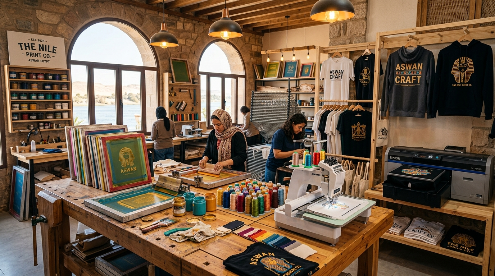

colors
أحبار معتمدة وثبات فائق
نستخدم أحباراً رقمية أوروبية وأحبار سلك سكرين أصلية خاضعة لمعالجة تثبيت حرارية خاصة لتظل محتفظة ببهائها حتى بعد عشرات الغسلات.
انطلق استوديو يوزرسيف من قلب محافظة أسوان ليكون الوجهة الأولى للأفراد والمؤسسات والبراندات المستقلة الباحثة عن التميز الحقيقي. نجمع بين مهارة وفنون الطباعة اليدوية الكلاسيكية، وأحدث ماكينات الطباعة الرقمية المباشرة (DTF)، والتطريز الياباني ثلاثي الأبعاد.
نؤمن بأن كل قطعة ملابس أو مج أو استيكر نصنعه هو سفير لهويتك؛ لذا نختار خامات القطن المصري الفاخر، ونعتمد أحباراً أصلية ذات ثبات معملي يدوم لسنوات حتى في ظل حرارة صيف أسوان الشديدة.

storefront داخل مشغلنا في أسوانكل قطعة تخرج من مشغلنا تمر بمراحل مراجعة دقيقة وتجهيز يضمن تطابق النتيجة النهائية مع أرقى المعايير الصناعية.
نستخدم أحباراً رقمية أوروبية وأحبار سلك سكرين أصلية خاضعة لمعالجة تثبيت حرارية خاصة لتظل محتفظة ببهائها حتى بعد عشرات الغسلات.
سواء كنت تبحث عن طباعة ناعمة DTF، أو تطريز ميكانيكي بارز، أو قص ليزري دقيق على الفينيل، فلدينا التجهيز المناسب لكل خامة.
موقعنا المحلي داخل أسوان يمنحك ميزة لا تضاهى: إمكانية فحص خامات الأقمشة، تجربة المقاسات، ومعاينة عينة حقيقية قبل تشغيل الكميات الكبيرة.
لا نلزمك بحدود دنيا تعجيزية. يمكنك طلب قطعة واحدة تذكارية لنفسك أو كهدية، كما نمتلك خطوط إنتاج جاهزة لتلبية كميات الشركات والفعاليات.
يسعدنا دائماً استقبالكم في مقر استوديو يوزرسيف بمدينة أسوان لمعاينة خامات الطباعة وتنسيق المشروعات الخاصة.
مدينة أسوان، جمهورية مصر العربية — على مقربة من كورنيش النيل والمناطق الحيوية.
السبت – الخميس: من الساعة 10:00 صباحاً حتى 10:00 مساءً.
الجمعة: عطلة أسبوعية.
نوفر منصة مخصصة لفحص أنسجة القطن، واختبار خامات DTF المقاومة، ومعاينة كابات التطريز واستيكرات الفينيل واقعياً.
للتنسيق المسبق قبل الزيارة أو لطلبات الشركات الكبرى: 01116891025
لديك سؤال عن الخامات، أو فكرة تصميم ترغب في مراجعتها، أو تحتاج عرض أسعار مخصص لشركتك؟ املأ النموذج أو تواصل معنا بالواتساب بضغطة زر.
تابعنا وتفاعل معنا على منصاتنا الرسمية
شاهد كواليس الطباعة الحية في مشغلنا، واستكشف أحدث النماذج وتجارب العملاء أولاً بأول عبر حساباتنا المعتمدة:
تيك توك — TikTok
@yuzersef1820فيديوهات سريعة لكواليس طباعة التيشيرتات، تفريغ السلك سكرين، وحركات التثبيت الحراري في المشغل.
شاهد الفيديوهات على تيك توك ←إنستغرام — Instagram
@yuzerseif____الأرشيف البصري عالي الدقة، جلسات تصوير الموديلز، وأحدث تصميمات الأزياء والهدايا المخصصة.
تابع حسابنا على إنستغرام ←فيسبوك — Facebook
USERSIEFASWANالصفحة الرسمية المعتمدة لمتابعة عروض أسوان، أخبار الاستوديو، وتقييمات العملاء وطلبات الجملة.
تابع صفحتنا على فيسبوك ←واتساب — WhatsApp
01116891025دردشة فورية مباشرة مع فريق المشغل لطلب التسعيرات السريعة، إرسال ملفات التصميم، ومتابعة الطلبات.
تواصل عبر واتساب فوراً ←